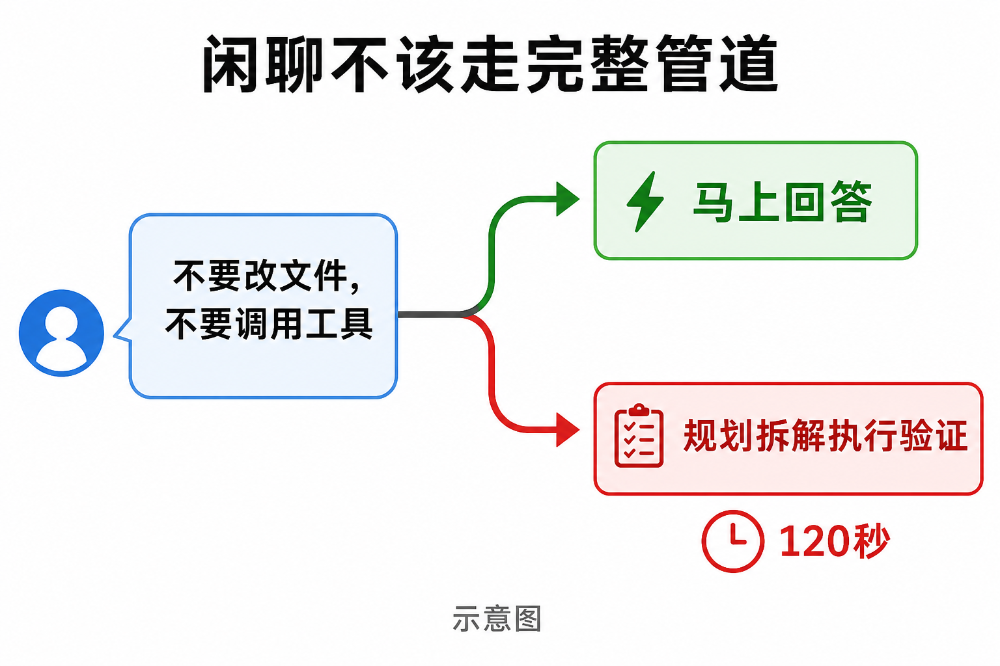
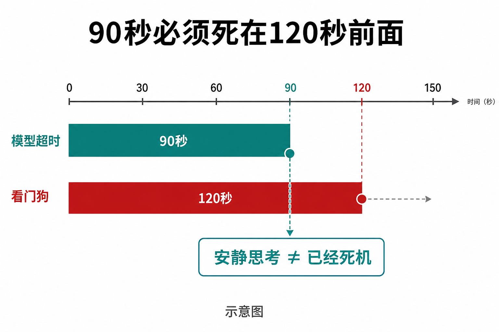

有人在界面里打了一句：
用三句话规划成都两日美食游。不要改文件，不要调用工具。
然后屏幕卡住了。超过 120 秒。
这不是网不好。仓库里的回归测试把这次现场记下来了，来源是真实图形界面。同一个编程助手，本来应该去改代码、跑命令、拆任务。可这句话写明了：别动手。
它还是走进了最重的那条路。
这个助手叫 RxyCode。

CHAPTER 01
它本来在防另一种死法
很多人用过会写代码的 AI。常见做法很直：想一步，调一次工具，再想。读一个文件、改一行，这样够用。
RxyCode 没停在这里。
2025 年底它还是这种一步一步的写法。2026 年 6 月重写成「先规划、再拆开、再执行」。工具跑完还要核对：你说做完了，结果真的对上原目标了吗？对不上，不算成功。
后来补了终端界面、桌面端、一键安装。2026 年 8 月的 v1.2.9，子任务还能单独开一间屋子：自己的上下文、自己的工具、自己的权限和预算。
这是认真干活的架构。
认真的代价也立刻出现了。一句旅行规划，在它眼里也可能像「做一个东西」。做东西，就要规划、拆解、执行、验证。
用户只是想听三句成都怎么吃。

复杂任务确实会这样跑：一条命令结束，下一条还在转。问题是，禁止动手的闲聊不该进来。
CHAPTER 02
一个入口，两种完全相反的活
难处不是「会不会规划」。
难处是同一个输入框，要接两种活。
一种是工程。改仓库、跑测试、派下手。需要工具，需要你点头，需要验证。
一种是话。你好。谢谢。陪我。不要调用工具。需要马上回，而且不许动手。
RxyCode 后来把分流写进了路由。你也可以自己下命令：走快的，或走完整管道。没指定时，它靠句子判断。
「不要调用工具」按代码应当直接走快路径，不再给模型工具。成都那句里就有这六个字。
可现场叠了四件事。
带工具的快路径绕过了应用层缓存。第二次同样的闲聊，也享受不到「刚才答过」。
「做个东西」的气味会掉进完整管道。贪吃蛇小游戏和旅行规划，都可能被看成工程。
用户请求旁边，系统还在做一次预热，最长大约 90 秒。同一条连接上抢时间。注释写明：这会叠在第一个字出现之前，把成都两日游拖过 120 秒。
即便后台已经在刷新外部工具，当前这句仍可能干等。一句禁止用工具的话，还在给工具生态付启动税。
四条叠完，用户只看见一个结果：卡住，然后被看门狗判死。
看门狗默认 120 秒。超时没进度，后台工人直接杀掉。本意是防真死机。这里杀的是还没开口的一句闲聊。

CHAPTER 03
90 秒必须死在 120 秒前面
看门狗动手之后，界面上往往只剩一句：任务卡住了。
真正的原因可能更无聊：模型那边一直没吐出第一个字。
2026 年 8 月 13 日，代码把超时做成了层级。
模型单次调用默认 90 秒，必须小于看门狗的 120 秒。注释写得很硬：超时要先自己报错。否则挂起会被伪装成「系统死了」。
预热不再跟用户请求抢道。外部工具刷新，对问候和明确拒用工具的句子可以跳过。
判断只有一句：你的失败，要失败成自己的错误，不要失败成整台助手死机。
90 秒和 120 秒都是默认值，都能改。这次没有在每台电脑上重放成都两日游，不能说现在所有人打开都低于 120 秒。测试能证明的是：这件事发生过，并且被写成了回归。

CHAPTER 04
看门狗后来又杀错过一种活人
首轮卡死按测试修了。同一套 120 秒窗口，又杀过另一种安静。
同一会话的第二轮，任务再次显示卡住超过 120 秒。模型没有停。是心跳停了。
界面会在同一个工人进程上查询子会话。查询把正在用的汇报通道换掉了。折叠起来的思考过程又不发进度事件。看门狗看见的是 120 秒静音。
它按设计杀人。
测试里还写了一句对照：有的同类产品，不把安静思考当成死任务。
三个目标分开都合理。没有进度就杀，避免一台挂死拖垮全部。子会话临时接管通道，好汇报自己的事。思考折叠，是为了少刷屏。叠在一起，「还在想」被读成「已经死」。
后来改的不是 120 秒这个数字。改的是：什么算进度。子会话查询，不许换掉主任务还在用的那条汇报。
CHAPTER 05
快，不能把安全门拆了
如果只为第一句闲聊服务，最省事的是关掉审批、白名单和验证。
仓库没走这条。
工具分三等：读、写、危险。删盘、把下载的脚本直接拿去执行、强推远程，会被抬到危险。写文件默认只能写在工作区等允许的目录。危险和写入可以弹窗问你。还可以开演习模式，只告诉你「没真执行」。
验证器在报告成功前，要看工具结果是不是真的对上原目标。评测跑的是完整流程，不是只看模型会不会说话。
2026 年 8 月 11 日的一次门禁记录是 18 项里过 17 项，94.7%，门槛 89.5%。唯一失败的那项，在基线里本来就是失败。这不是「所有用户都更准了」。它是一张切片。
中文说明里写过一万零四百多个确定性测试通过。v1.2.9 发布说明写的是另一组全绿数字。两套数字来自不同文档、不同时候。这次没有重跑全量测试，不以其中某一个当今天的实时成绩。

助手要写文件时，会停下来问你。批准、拒绝，或以后都允许。安全门在这里，不是口号。
许可证是 MIT。版权页写的是 2025 年 RxyCode contributors。源码可以按 MIT 使用、修改、再分发。它不是「有人免费帮你托管一台」。
CHAPTER 06
适合谁，不适合谁
适合：你有真实仓库，需要助手规划、动手、再核对；你也希望它改文件前先问一声。
不适合：你要它不问就改生产环境；你把一句闲聊的快慢，当成全部能力的证明。
成都那句还在测试里。它现在不是攻略。它是一块挡板：下一句「不要调用工具」，不要再被当成一项要规划、要执行、要验证的工程。
当前文档指向的可安装版本是 v1.2.9。仓库在 github.com/xin-yi33/RxyCode。Windows 可以用官方安装脚本，Mac 和 Linux 也可以。跑起来以后，没有模型也会先打开界面，再带你加模型。
本地这次写作对照的是 2026 年 8 月 13 日的仓库。90 秒、120 秒、那次 6.5 秒的启动变慢，分别来自默认配置、测试和代码注释，不是刻在安装包上的体验承诺。
一句旅行规划能卡住 120 秒。不是因为助手不会聊天。是因为它太把「干活」当回事了。后来它学的是：干活归干活，闲聊不许被拖去受刑。